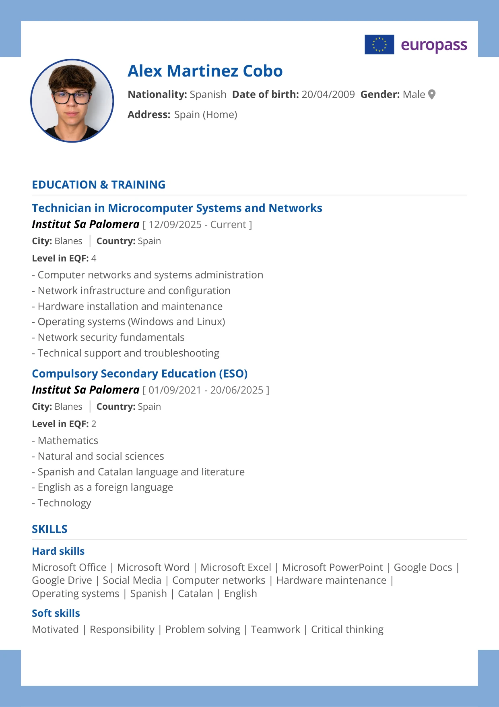
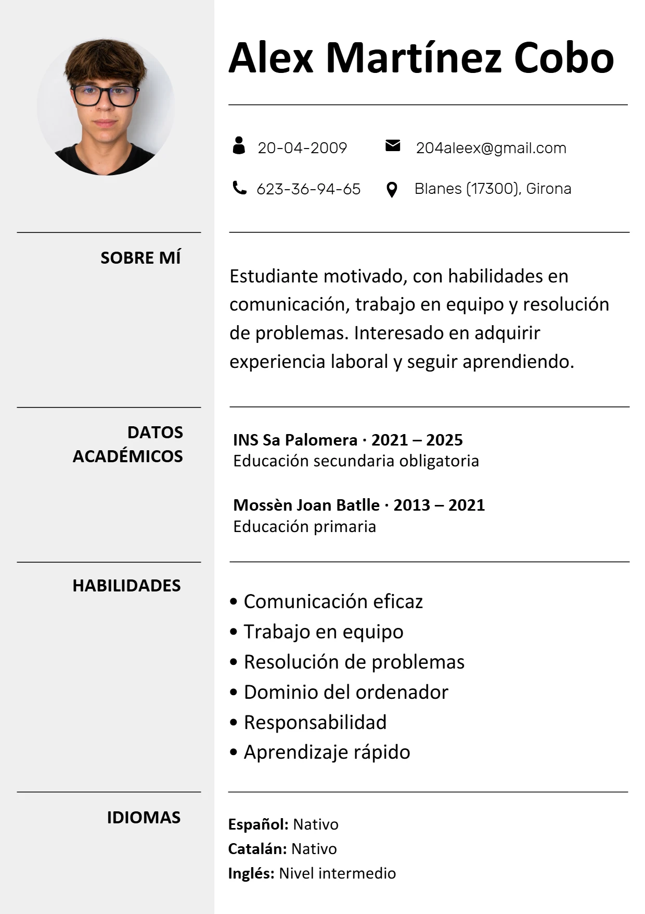
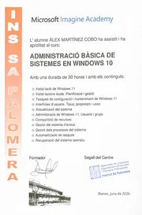
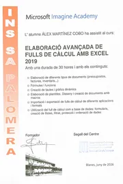
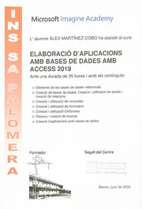
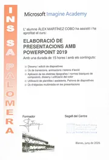
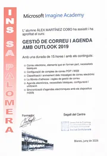

Título
Pregunta
Cargando el portfolio…
Arrastra para girar la sala Arrastra para girar la sala
Técnico en Sistemas Microinformáticos y Redes
Actualmente estudio SMX en Sa Palomera, y en este portfolio voy recogiendo lo que aprendo por el camino.
Me interesa sobre todo la Inteligencia Artificial, y disfruto del trabajo que me deja resolver problemas reales y ver el resultado. Fuera de clase dedico mi tiempo a entrenar y aprender habilidades de alto valor.
Crea tu mapa de paradigma personal para vivir al máximo.
Paradigma personal = sistema de creencias: los principios básicos de nuestra filosofía de vida.
Pregunta
Pregunta
Pregunta
Pregunta
Pregunta
Pregunta
Frase
Aquí tienes mi currículum en dos formatos: el Europass (en inglés) y mi currículum en español.


Los certificados y diplomas oficiales de mi primer curso de Sistemas Microinformáticos y Redes (SMX) en el INS Sa Palomera, de junio de 2026. Pulsa uno para verlo entero.

Administración básica de sistemas en Windows 10
Elaboración avanzada de hojas de cálculo con Excel 2019
Elaboración de aplicaciones con bases de datos con Access 2019
Elaboración de presentaciones con PowerPoint 2019
Gestión de correo y agenda con Outlook 2019Aquí iré publicando los proyectos que haga en clase y por mi cuenta.
Contenido en preparación.
Pronto añadiré aquí mis datos de contacto.